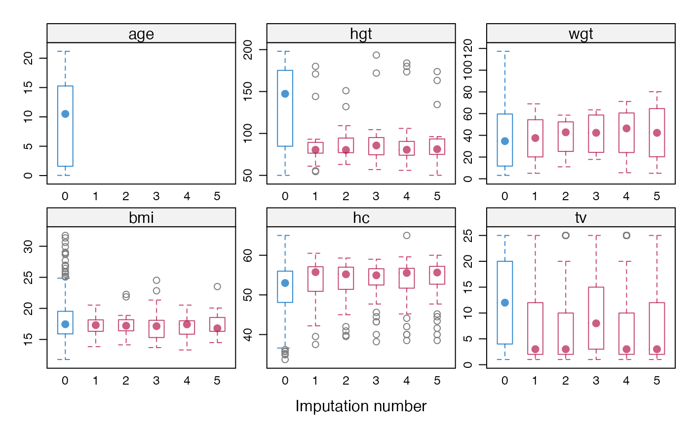
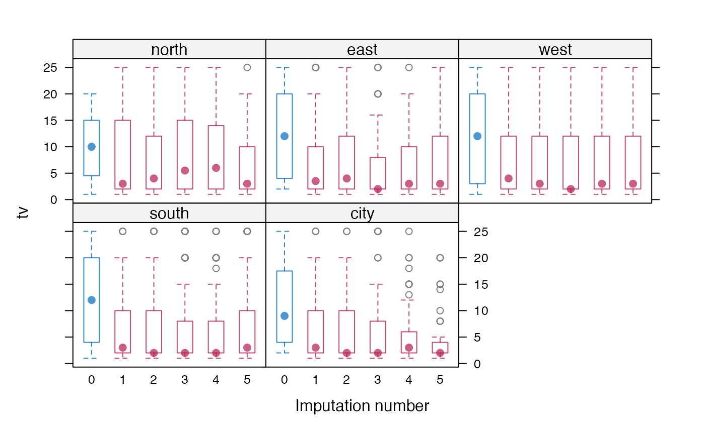
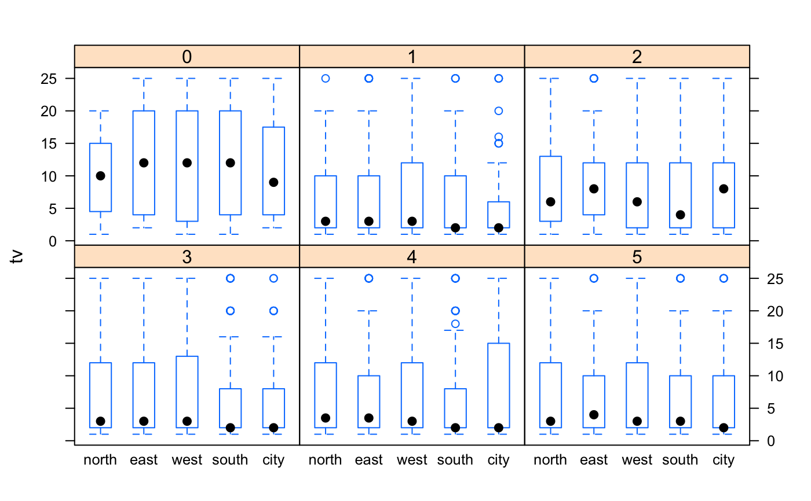

Plotting methods for imputed data using lattice. bwplot
produces box-and-whisker plots. The function
automatically separates the observed and imputed data. The
functions extend the usual features of lattice.
# S3 method for mids bwplot( x, data, na.groups = NULL, groups = NULL, as.table = TRUE, theme = mice.theme(), mayreplicate = TRUE, allow.multiple = TRUE, outer = TRUE, drop.unused.levels = lattice::lattice.getOption("drop.unused.levels"), ..., subscripts = TRUE, subset = TRUE )
| x | A |
|---|---|
| data | Formula that selects the data to be plotted. This argument follows the lattice rules for formulas, describing the primary variables (used for the per-panel display) and the optional conditioning variables (which define the subsets plotted in different panels) to be used in the plot. The formula is evaluated on the complete data set in the Extended formula interface: The primary variable terms (both the LHS
For convenience, in |
| na.groups | An expression evaluating to a logical vector indicating
which two groups are distinguished (e.g. using different colors) in the
display. The environment in which this expression is evaluated in the
response indicator The default |
| groups | This is the usual |
| as.table | See |
| theme | A named list containing the graphical parameters. The default
function |
| mayreplicate | A logical indicating whether color, line widths, and so
on, may be replicated. The graphical functions attempt to choose
"intelligent" graphical parameters. For example, the same color can be
replicated for different element, e.g. use all reds for the imputed data.
Replication may be switched off by setting the flag to |
| allow.multiple | See |
| outer | See |
| drop.unused.levels | See |
| ... | Further arguments, usually not directly processed by the high-level functions documented here, but instead passed on to other functions. |
| subscripts | See |
| subset | See |
The high-level functions documented here, as well as other high-level
Lattice functions, return an object of class "trellis". The
update method can be used to
subsequently update components of the object, and the
print method (usually called by default)
will plot it on an appropriate plotting device.
The argument na.groups may be used to specify (combinations of)
missingness in any of the variables. The argument groups can be used
to specify groups based on the variable values themselves. Only one of both
may be active at the same time. When both are specified, na.groups
takes precedence over groups.
Use the subset and na.groups together to plots parts of the
data. For example, select the first imputed data set by by
subset=.imp==1.
Graphical parameters like col, pch and cex can be
specified in the arguments list to alter the plotting symbols. If
length(col)==2, the color specification to define the observed and
missing groups. col[1] is the color of the 'observed' data,
col[2] is the color of the missing or imputed data. A convenient color
choice is col=mdc(1:2), a transparent blue color for the observed
data, and a transparent red color for the imputed data. A good choice is
col=mdc(1:2), pch=20, cex=1.5. These choices can be set for the
duration of the session by running mice.theme().
The first two arguments (x and data) are reversed
compared to the standard Trellis syntax implemented in lattice. This
reversal was necessary in order to benefit from automatic method dispatch.
In mice the argument x is always a mids object, whereas
in lattice the argument x is always a formula.
In mice the argument data is always a formula object, whereas in
lattice the argument data is usually a data frame.
All other arguments have identical interpretation.
Sarkar, Deepayan (2008) Lattice: Multivariate Data Visualization with R, Springer.
van Buuren S and Groothuis-Oudshoorn K (2011). mice: Multivariate
Imputation by Chained Equations in R. Journal of Statistical
Software, 45(3), 1-67. https://www.jstatsoft.org/v45/i03/
mice, xyplot, densityplot,
stripplot, lattice for an overview of the
package, as well as bwplot,
panel.bwplot,
print.trellis,
trellis.par.set
Stef van Buuren
#> #> iter imp variable #> 1 1 hgt wgt bmi hc gen phb tv reg #> 1 2 hgt wgt bmi hc gen phb tv reg #> 1 3 hgt wgt bmi hc gen phb tv reg #> 1 4 hgt wgt bmi hc gen phb tv reg #> 1 5 hgt wgt bmi hc gen phb tv reg### box-and-whisker plot per imputation of all numerical variables bwplot(imp)### tv (testicular volume), conditional on region bwplot(imp, tv ~ .imp | reg)